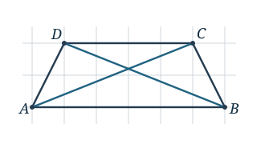
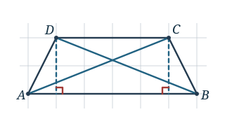
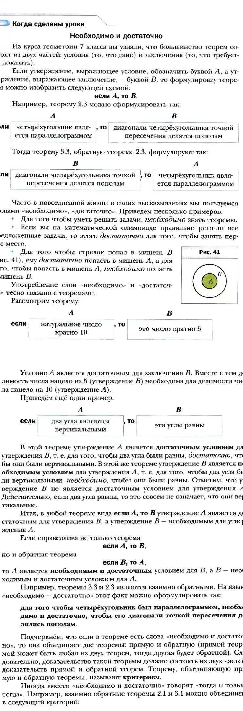
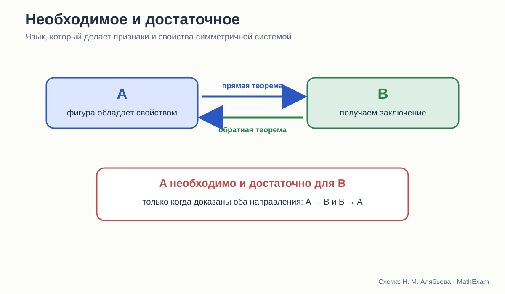

Стройность школьного курса геометрии · статья 7 из 12
Необходимо и достаточно
Равные диагонали у трапеции и параллелограмма. Как три учебника учат различать свойство, признак и обратное утверждение.
Достаточно ли равенства диагоналей

Для моей задачи на клетчатой бумаге возьмём точки A(0; 0), B(6; 0), C(5; 2), D(1; 2).
Диагонали прямоугольника равны. Ученик повернул утверждение и записал: «Если AC = BD, то ABCD — прямоугольник». Проверьте это на рисунке.
Разбор для учителя

Опустите из C и D перпендикуляры на AB. От A до C — пять клеток вправо и две вверх. От B до D — пять влево и две вверх. У прямоугольных треугольников с этими диагоналями в роли гипотенуз попарно равны катеты, поэтому AC = BD. AB = 6, а CD = 4. У прямоугольника противоположные стороны равны. Прямоугольность влечёт равенство диагоналей. Обратное утверждение опровергает этот четырёхугольник.
Что изменится, если заранее дан параллелограмм
Пусть ABCD — параллелограмм и AC = BD. Сравним треугольники ABC и BAD. Сторона AB общая, BC = AD как противоположные стороны параллелограмма, AC = BD по условию. По третьему признаку треугольники равны. Поэтому ∠ABC = ∠BAD. Эти соседние углы параллелограмма в сумме дают 180°, значит, каждый равен 90°. Остальные углы равны им как противоположные. Получили прямоугольник.
В прямую сторону треугольники ABC и BAD в прямоугольнике равны уже по первому признаку. Сторона AB общая, BC = AD, а углы ABC и BAD между соответствующими сторонами прямые. Отсюда AC = BD. Теперь можно предложить две фразы для завершения. «Среди всех выпуклых четырёхугольников равенство диагоналей для прямоугольника…» — необходимо, но недостаточно. «Среди параллелограммов равенство диагоналей для прямоугольника…» — необходимо и достаточно. Стоит вернуться к первому чертежу и найти точную строку, которая перестала работать. В нашей равнобедренной трапеции BC = AD, поэтому треугольники ABC и BAD действительно равны. Но соседние углы при A и B здесь оба острые. Их сумма меньше 180°. Именно для шага о сумме углов потребовалась параллельность AD и BC.
Где ученику встречаются оба направления
У Погорелова разговор об обратной теореме входит уже в § 3 книги 7–9 классов. В п. 23 разбираются свойства равнобедренного треугольника, п. 24 посвящён обратной теореме. От равных сторон к углам при основании и от равных углов к противоположным сторонам — два перехода, у каждого своё доказательство.
У Мерзляка эта работа тоже начинается в 7 классе. В базовом издании 2015 года теорема 8.2 говорит о точке серединного перпендикуляра к отрезку, а теорема 11.2 возвращает на эту прямую точку, равноудалённую от концов отрезка. В п. 12 авторы сопоставляют формулировки. В № 269–270 нужно найти условие и заключение, различить свойство и признак. В № 271–272 ученик сам строит обратное утверждение и проверяет его истинность. Позже, в теореме 19.1, оба направления понадобятся снова, чтобы описать геометрическое место точек.

В 8 классе Мерзляк возвращается к вопросу на материале параллелограммов. Здесь прежние действия получают общий язык необходимых и достаточных условий. В 7 классе ученик уже мог проверить ложное обращение. Например, два угла могут давать в сумме 180° и иметь разные вершины. Смежными они тогда быть не могут.
У Атанасяна удобно сопоставить § 1 и § 3 главы III. В начале главы равенство накрест лежащих углов позволяет установить параллельность прямых. В конце, когда параллельность уже дана, свойства параллельных прямых позволяют вывести равенство углов. На одном рисунке можно стереть засечки у углов, отметить параллельность и спросить, как должна измениться первая строка решения.

Как услышать логическую ошибку
Я прошу произнести вывод целиком, особенно первое слово после «если». Фраза «у прямоугольника диагонали равны» сама по себе безупречна. Если в тетради известно только AC = BD и ребёнок уже написал «значит, это прямоугольник», прошу назвать класс фигур и найти именно то утверждение, которое позволяет сделать такой шаг. Показать на клетках одну подходящую трапецию достаточно для опровержения первого вывода. Во второй задаче надо обосновать вывод для любого параллелограмма с равными диагоналями. В этих двух работах разная цена одного рисунка.
Какие издания сравниваются
- Л. С. Атанасян и др. «Математика. Геометрия. 7–9 классы. Базовый уровень». 14-е переработанное издание, 2023. Печатное издание — ISBN 978-5-09-102538-5, по ссылке — электронная форма 2023 года.
- А. В. Погорелов. «Геометрия. 7–9 классы». Просвещение, 11-е стереотипное издание, 2022. ISBN 978-5-09-087755-8.
- А. Г. Мерзляк, В. Б. Полонский, М. С. Якир. «Геометрия. 7, 8, 9 классы». Сравнивается базовая линия. Номера пунктов, теорем и упражнений 7 класса даны по изданию «Вентана-Граф», 2015.
- Т. А. Бурмистрова (сост.). Геометрия. Сборник примерных рабочих программ. 7–9 классы. Просвещение, 2020, с. 14–15 и 24–26. Здесь можно сверить порядок тем у Атанасяна и Погорелова.
Ссылки ведут на официальные страницы издательства. Фрагменты страниц приведены в объёме, необходимом для методического и критического анализа; права на учебники и их оформление принадлежат авторам и издательствам.